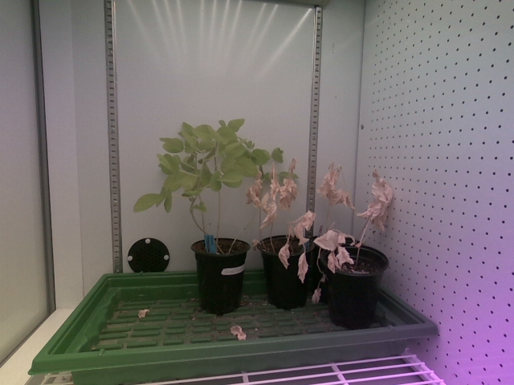
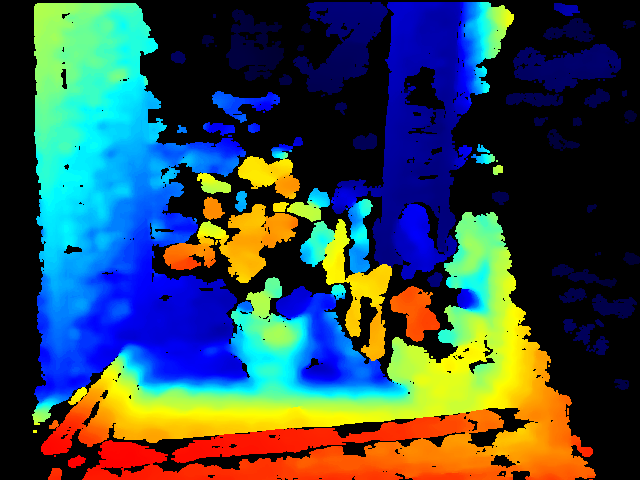
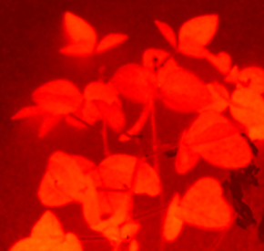

The Astro Cultivators dataset combines RGB, depth, and hyperspectral imaging to monitor soybean growth and drought stress in controlled chamber experiments.
The project uses multiple imaging sources so plant health can be studied from more than one view. RGB images capture visible color and shape, depth images support structure and height related measurements, and hyperspectral images capture wavelength based plant response.
RGB, depth, and hyperspectral data are used together to support plant stress analysis.
Hyperspectral TIFF files were filtered to keep valid 51 band images for consistent analysis.
Most processing focused on the grow light window so image quality and lighting were more consistent.
These examples show the three main types of imaging data used in the project.

Used for visible plant color, segmentation, VARI, area, and growth related traits.

Used to support structure based features such as height, depth variation, and canopy shape.

Used to compute vegetation indices and capture plant responses beyond normal RGB color.
RGB images from the Intel RealSense camera were used to segment visible plant regions and compute visible growth features such as area, height, and VARI.
Raw depth data was used to explore plant structure features such as depth standard deviation, surface roughness, canopy volume, and vertical spread.
Hyperspectral TIFF cubes were used to measure plant response across wavelength bands and compute vegetation indices such as NDVI, GNDVI, red edge NDVI, chlorophyll red edge, and simple ratio.
The dataset includes calibration work and drought stress experiments. The experiment log includes chamber settings, sensor use, watering schedules, plant dates, and notes about data quality.
| Plant Set | Sensor Type | Lighting | Experiment Type | Notes |
|---|---|---|---|---|
| Calibration Cycle 1 | Hyperspectral | Night mode setup | Camera setup and calibration | Messy early data with gaps. Not used for stress detection. |
| Calibration Cycle 2 | Hyperspectral | Night mode setup | Cleaner calibration data | Used for hyperspectral preprocessing and vegetation index feature engineering. |
| Set 1 | Hyperspectral and RealSense | 7 hour photoperiod | Drought experiment | Included control and drought plants. RealSense data had timing drift and quality issues. |
| Set 2 | Hyperspectral and RealSense | 6 AM to 1 PM | Best dataset for final modeling | Included one control plant on the left and one drought plant on the right. Used for final RealSense stress detection modeling. |
| Set 3 | Hyperspectral and RealSense expected | 6 AM to 4 PM | Current or incomplete | Still needed clarification and complete data before final analysis. |
Set 2 was the strongest dataset for final RealSense analysis because it had a cleaner imaging window and clear control versus drought setup.
Usable RealSense frames were identified after manual review, filtering, and segmentation checks.
The final RealSense workflow used daily aggregated data across 20 days.
The left plant was control and the right plant was drought.
The hyperspectral preprocessing work cleaned raw TIFF files, validated 51 band cube structure, removed invalid frames, created NDVI masks, and saved vegetation related metadata.
The RealSense workflow used RGB and raw depth images from the Intel RealSense D435 camera. RGB images supported segmentation and color based features, while depth images supported structure based plant traits.
The notebooks use Python, NumPy, Pandas, tifffile, OpenCV, Matplotlib, SciPy, scikit image, PyTorch, Grounded SAM 2, SAM 2.1, and scikit learn to organize files, load images, filter invalid data, calculate features, and export CSV outputs.
← Back to Home